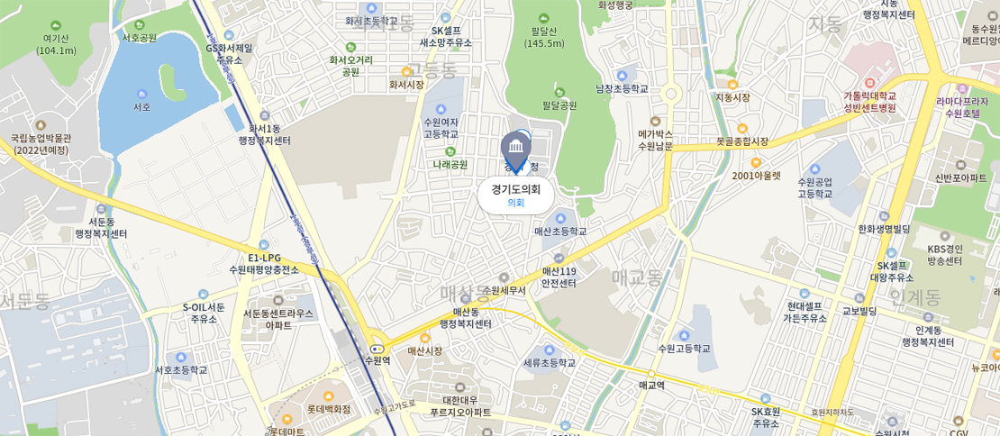

지도로 보기
전철 또는 기차이용시
수원역에서 하차하여 도보로 약 15분 오시면 됩니다.(팔달산중턱에 경기도의회 소재)
버스이용시
수원역에서 하차하여 도보로 약 15분 오시면 됩니다.(팔달산중턱에 경기도의회 소재)
| 노선번호 | 전체구간 | 구간정보 |
|---|---|---|
| 7-1번 | 망포동벽산아파트-수원역 | (망포동벽산아파트 - 터미널 - 세류사거리 - 수원역 - 고등동파출소 - 고등동오거리(도의회 후문) - 병무청 - 수원여고) |
| 1007 번 | 잠실역-수원역 | (고색초교 - 수원역 - 장안문 - 경기대학 - 성남 - 잠실역) |
| 7770 번 | 사당역-수원역 | (수원역 - 장안공원 - 장안문 - 운동장 - 삼익APT - 의왕고속도로 - 사당역) |
| 777번 | 사당역-수원역 | (수원역 - 화서문 - 장안문 - 운동장 - 행정안전부 지방행정연수원 - 의왕 - 군포인덕원 - 과천 - 사당역) |
| 11번 | 반월공단-도청입구 | (보훈원 - 장안문 - 팔달문 - 도청입구 - 입북동 - 안산본오동 - 상록수역 - 안산시청 - 라성호텔 - 안산역 - 반월공단) |
| 3000 번 | 강남역-수원역 | (오목천동 차고 - 수원역 - 팔달문 - 의왕고속도로 - 양재 - 강남역) |
| 900 번 | 보라매공원-수원역 | (보라매공원 - 구로디지털단지역 - 범계역 - 수원역 - 영통경희대) |
| 909 번 | 시화아파트단지-수원역 | (시화아파트단지 - 안산시청 - 상록수역 - 입북동 - 농촌진흥청 - 수원역 - 평동차고지) |
| 5-1 번 | 동탄신도시-수원역 | (동탄신도시 - 병점역 - 반월리 - 수원역 - 수원여고 - 웃거리 - 서수원터미널) |
| 1001 번 | 동탄신도시-수원역 | (동탄신도시 - 수원역 - 매송 - 남양 - 제부도) |
| 900-9 번 | 동탄신도시-수원역 | (동탄신도시 - 수원역 - 신대방경남아파트) |
| 400-1 번 | 서신-수원역 | (서신 - 송산 - 남양 - 비봉 - 수원역 - 장안문) |
| 490 번 | 제부도-수원역 | (제부도 - 서신 - 송산-남양 - 비봉 - 수원역) |
자가이용시
사당 ～ 경기도의회(약 23km) [의왕 ～ 과천 고속도로 이용]
| 구분 | 이동경로 | 이동거리 |
|---|---|---|
| 0 | 사당역(전철 2호선) 출발지 | 3.15Km |
| 1 | 남태령지하차도 직진방향 지하도로진입 | 1.27Km |
| 2 | 대공원고가차도 오른쪽 고가도로옆길 | 2.2915Km |
| 3 | 과천봉담간고속화도로 왼쪽 진입 | 9.85Km |
| 4 | 월암IC 오른쪽 나감 | 3.15Km |
| 5 | 월암IC 좌회전(수원역,경기도의회 방향)후 직진 | 0.66Km |
| 6 | 지하차도 직진방향 지하도로 진입 | 0.78Km |
| 7 | 화서역 0.5km 지나서 경기도청,경기도의회 방향으로 좌회전 | 2.78Km |
| 8 | 경기도의회 목적지 |
강남역 ～ 경기도의회(약 27km) [의왕 ～ 과천 고속도로 이용]
| 구분 | 이동경로 | 이동거리 |
|---|---|---|
| 0 | 강남역 출발지 | 1.38Km |
| 1 | 법원검찰청 좌회전 | 0.59Km |
| 2 | 서울교대 우회전 | 0.44Km |
| 3 | 교대입구 좌회전 | 8.42Km |
| 4 | 과천봉담간고속화도로 왼쪽 진입 | 9.85Km |
| 5 | 월암IC 오른쪽 나감 | 0.66Km |
| 6 | 월암IC 좌회전(수원역,경기도의회 방향)후 직진 | 0.78Km |
| 7 | 지하차도 직진방향 지하도로 진입 | 2.78Km |
| 8 | 화서역 0.5km 지나서 경기도도청,경기도의회 방향으로 좌회전 | 1.5Km |
| 9 | 경기도의회 목적지 |
북수원 IC ～ 경기도의회(약 11km) [영동 고속도로 이용]
| 구분 | 이동경로 | 이동거리 |
|---|---|---|
| 0 | 북수원IC 직진 | 1.28Km |
| 1 | 북수원IC 왼쪽으로 나감 | 4.97Km |
| 2 | 한일타운아파트 지나면서 운동장앞에서 우회전 | 0.74Km |
| 3 | 북문로 좌회전 | 1.23Km |
| 4 | 장안문로터리 우회전 | 1.52Km |
| 5 | 화서사거리 좌회전 | 0.26Km |
| 6 | 병무청사거리 도청방향 직진 | 0.73Km |
| 7 | 경기도의회 목적지 |
동수원 IC ～ 경기도의회(약 7km) [영동 고속도로 이용]
| 구분 | 이동경로 | 이동거리 |
|---|---|---|
| 0 | 동수원IC 직진 | 0.79Km |
| 1 | 동문,경찰청방향 진입 | 3.44Km |
| 2 | 종로사거리 좌회전 | 0.44Km |
| 3 | 팔달문 로타리 직진 | 0.62Km |
| 4 | 교동사거리 우회전 | 0.72Km |
| 5 | 도청사거리 우회전 | 0.45Km |
| 6 | 경기도의회 목적지 |
부곡 IC ～ 경기도의회(약 11km) [의왕～과천 고속도로 이용]
| 구분 | 이동경로 | 이동거리 |
|---|---|---|
| 0 | 부곡IC 나감 | 0.54Km |
| 1 | 수원방향 진입 | 5.56Km |
| 2 | 지하차도 직진방향 지하도로진입 | 2.78Km |
| 3 | 화서역 0.5km 지나서 경기도,경기도의회 방향으로 좌회전 | 1.5Km |
| 4 | 경기도의회 목적지 |
수원 IC ～ 경기도의회(약 15km) [경부 고속도로 이용]
| 구분 | 이동경로 | 이동거리 |
|---|---|---|
| 0 | 수원IC 직진방향 | 1.86Km |
| 1 | 신갈분기점에서 수원방향 오른쪽 진입 | 0.23Km |
| 2 | 영동고속도로 진입(동수원,안산방향) | 5.68Km |
| 3 | 동수원IC 오른쪽 나감 | 1.01Km |
| 4 | 오른쪽방향(동문,경찰청) 진입 | 3.44Km |
| 5 | 종로사거리 좌회전 | 0.44Km |
| 6 | 팔달문 로타리 직진 | 0.62Km |
| 7 | 교동사거리 우회전 | 0.72Km |
| 8 | 도청사거리 우회전 | 0.45Km |
| 9 | 경기도의회 목적지 |
비봉 IC ～ 경기도의회(약 14km) [서해안 고속도로 이용]
| 구분 | 이동경로 | 이동거리 |
|---|---|---|
| 0 | 비봉IC 직진방향 | 0.65Km |
| 1 | 비봉IC교차로 수원방향 진입 | 1.64Km |
| 2 | 어천교차로 수원방향 우회전 | 6.65Km |
| 3 | 고색사거리 직진 | 2.6Km |
| 4 | 43번국도 직진 | 0.25Km |
| 5 | 43번 국도(역전지하도) 좌회전 | 0.49Km |
| 6 | 수원역광장 우회전 | 0.74Km |
| 7 | 도청사거리 좌회전 | 0.45Km |
| 8 | 경기도의회 목적지 |
오산역 ～ 경기도의회(약 18km) [경수 산업도로 이용]
| 구분 | 이동경로 | 이동거리 |
|---|---|---|
| 0 | 오산역(전철 1호선) 직진 | 0.42Km |
| 1 | 중원사거리 우회전 | 0.46Km |
| 2 | 이마트 좌회전 | 5.41Km |
| 3 | 세마대사거리 직진 | 1.99Km |
| 4 | 병점지하차도 직진 | 6.92Km |
| 5 | 수원시청사거리 좌회전 | 2.15Km |
| 6 | 경기도의회 목적지 |
안산역 ～ 경기도의회(약 23km)
| 구분 | 이동경로 | 이동거리 |
|---|---|---|
| 0 | 안산역(전철 4호선) 직진 | 1.74Km |
| 1 | 공단역지하차도 직진 | 2.13Km |
| 2 | 중앙지하차도 직진 | 2.45Km |
| 3 | 39번국도 우회전 | 11.92Km |
| 4 | 구운삼거리 직진 | 2.73Km |
| 5 | 육교사거리 우회전 | 0.37Km |
| 6 | 수원역광장 좌회전 | 0.79Km |
| 7 | 도청사거리 좌회전 | 0.46Km |
| 8 | 경기도의회 목적지 |
발안사거리 ～ 경기도의회(약 17km)
| 구분 | 이동경로 | 이동거리 |
|---|---|---|
| 0 | 발안사거리 수원방향 직진 | 11.92Km |
| 1 | 봉담교차로 좌회전 | 0.5Km |
| 2 | 고색사거리 우회전 | 2.6Km |
| 3 | 43번국도 직진 | 0.25Km |
| 4 | 43번 국도(역전지하도) 좌회전 | 0.49Km |
| 5 | 수원역광장 우회전 | 0.74Km |
| 6 | 도청사거리 좌회전 | 0.45Km |
| 7 | 경기도의회 목적지 |
의왕 ～ 경기도의회(약 11km) [경수 산업도로 이용]
| 구분 | 이동경로 | 이동거리 |
|---|---|---|
| 0 | 고천사거리 (경수 산업도로 직진) | 5.71Km |
| 1 | 한일타운아파트 지나면서 운동장앞에서 우회전 | 0.74Km |
| 2 | 북문로 좌회전 | 1.23Km |
| 3 | 장안문로터리 우회전 | 1.52Km |
| 4 | 화서사거리 좌회전 | 0.26Km |
| 5 | 병무청사거리 도청방향 직진 | 0.73Km |
| 6 | 경기도의회 목적지 |
신갈 ～ 경기도의회(약 12km)
| 구분 | 이동경로 | 이동거리 |
|---|---|---|
| 0 | 신갈에서 수원방향으로 직진 | 0.25Km |
| 1 | 기흥읍에서 우회전 | 1.25Km |
| 2 | 42번국도 우회전 | 1.61Km |
| 3 | 영덕고가교 직진 | 2.38Km |
| 4 | 원천교삼거리 좌회전 | 1.67Km |
| 5 | 매여울지하차도 우회전 | 0.24Km |
| 6 | 매탄3동 우회전 (도청방향으로) | 4.21Km |
| 7 | 경기도의회 목적지 |
분당 ～ 경기도의회(약 20km)
| 구분 | 이동경로 | 이동거리 |
|---|---|---|
| 0 | 분당구청 직진 | 1.42Km |
| 1 | 백궁사거리 우회전 | 4.98Km |
| 2 | 풍덕고가차도 우회전 | 0.37Km |
| 3 | 죽전사거리 우회전 | 8.64Km |
| 4 | 연무중사거리 직진 | 1.7Km |
| 5 | 종로사거리 좌회전 | 0.44Km |
| 6 | 팔달문로터리 직진 | 0.62Km |
| 7 | 교동사거리 우회전 | 0.72Km |
| 8 | 도청사거리 우회전 | 0.45Km |
| 9 | 경기도의회 목적지 |
자료관리 담당자
- 홍보담당관 홍길동
- 대표전화 031-000-0000